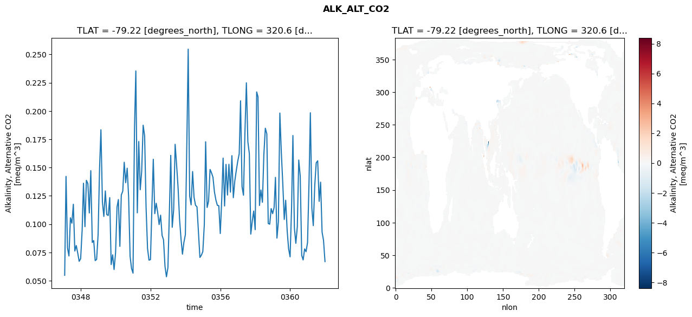
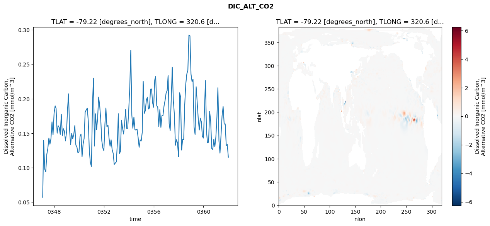
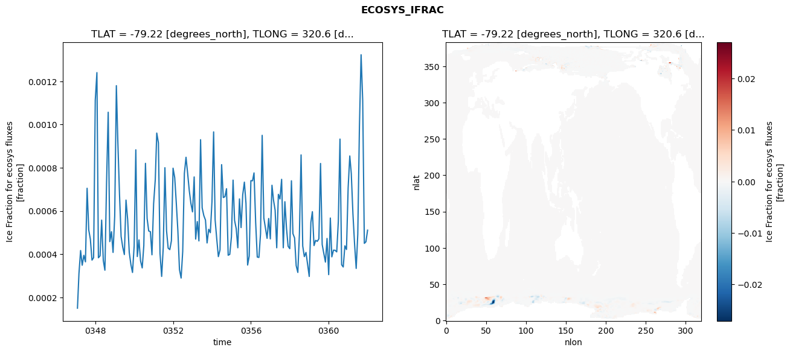
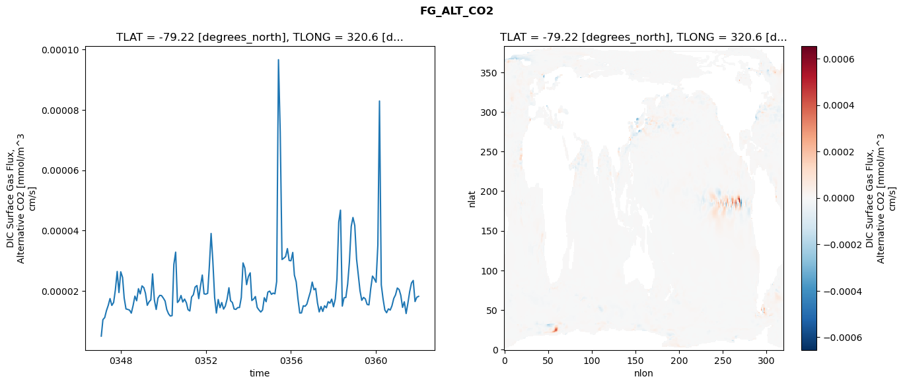

glb-dor_North_Atlantic_basin_013_1999-01-01_00052#
Simulation details#
Case: smyle.cdr-atlas-v0.glb-dor_North_Atlantic_basin_013_1999-01-01_00052.001
Basin: North_Atlantic_basin
Polygon: 13.0
Start date: 1999-01
Show code cell source Hide code cell source
import xarray as xr
import matplotlib.pyplot as plt
Show code cell source Hide code cell source
zarr_store = "/path/to/zarr/store"
# Parameters
zarr_store = "/global/cfs/projectdirs/m4746/Projects/Ocean-CDR-Atlas-v0/data/validation/smyle.cdr-atlas-v0.glb-dor_North_Atlantic_basin_013_1999-01-01_00052.001.validation.zarr"
Show code cell source Hide code cell source
%%time
ds_o = xr.open_zarr(zarr_store).compute()
ds_o
CPU times: user 691 ms, sys: 508 ms, total: 1.2 s
Wall time: 1.58 s
<xarray.Dataset> Size: 2MB
Dimensions: (nlat: 384, nlon: 320, time: 180)
Coordinates:
TLAT float64 8B -79.22
TLONG float64 8B 320.6
ULAT float64 8B -78.95
ULONG float64 8B 321.1
* time (time) object 1kB 0347-02-01 00:00:00 ... 0362-01-01 0...
z_t float32 4B 500.0
Dimensions without coordinates: nlat, nlon
Data variables:
ALK_ALT_CO2_diff (nlat, nlon) float32 492kB nan nan nan ... nan nan nan
ALK_ALT_CO2_rmse (time) float64 1kB 0.0548 0.1422 ... 0.08571 0.0669
DIC_ALT_CO2_diff (nlat, nlon) float32 492kB nan nan nan ... nan nan nan
DIC_ALT_CO2_rmse (time) float64 1kB 0.0571 0.1398 ... 0.1338 0.1153
ECOSYS_IFRAC_diff (nlat, nlon) float32 492kB nan nan nan ... nan nan nan
ECOSYS_IFRAC_rmse (time) float64 1kB 0.0001499 0.00031 ... 0.0005111
FG_ALT_CO2_diff (nlat, nlon) float32 492kB nan nan nan ... nan nan nan
FG_ALT_CO2_rmse (time) float64 1kB 5.023e-06 1.049e-05 ... 1.821e-05xarray.Dataset
- nlat: 384
- nlon: 320
- time: 180
- TLAT()float64-79.22
- long_name :
- array of t-grid latitudes
- units :
- degrees_north
array(-79.22052261)
- TLONG()float64320.6
- long_name :
- array of t-grid longitudes
- units :
- degrees_east
array(320.56250892)
- ULAT()float64-78.95
- long_name :
- array of u-grid latitudes
- units :
- degrees_north
array(-78.95289509)
- ULONG()float64321.1
- long_name :
- array of u-grid longitudes
- units :
- degrees_east
array(321.12500894)
- time(time)object0347-02-01 00:00:00 ... 0362-01-...
- bounds :
- time_bound
- long_name :
- time
array([cftime.DatetimeNoLeap(347, 2, 1, 0, 0, 0, 0, has_year_zero=True), cftime.DatetimeNoLeap(347, 3, 1, 0, 0, 0, 0, has_year_zero=True), cftime.DatetimeNoLeap(347, 4, 1, 0, 0, 0, 0, has_year_zero=True), cftime.DatetimeNoLeap(347, 5, 1, 0, 0, 0, 0, has_year_zero=True), cftime.DatetimeNoLeap(347, 6, 1, 0, 0, 0, 0, has_year_zero=True), cftime.DatetimeNoLeap(347, 7, 1, 0, 0, 0, 0, has_year_zero=True), cftime.DatetimeNoLeap(347, 8, 1, 0, 0, 0, 0, has_year_zero=True), cftime.DatetimeNoLeap(347, 9, 1, 0, 0, 0, 0, has_year_zero=True), cftime.DatetimeNoLeap(347, 10, 1, 0, 0, 0, 0, has_year_zero=True), cftime.DatetimeNoLeap(347, 11, 1, 0, 0, 0, 0, has_year_zero=True), cftime.DatetimeNoLeap(347, 12, 1, 0, 0, 0, 0, has_year_zero=True), cftime.DatetimeNoLeap(348, 1, 1, 0, 0, 0, 0, has_year_zero=True), cftime.DatetimeNoLeap(348, 2, 1, 0, 0, 0, 0, has_year_zero=True), cftime.DatetimeNoLeap(348, 3, 1, 0, 0, 0, 0, has_year_zero=True), cftime.DatetimeNoLeap(348, 4, 1, 0, 0, 0, 0, has_year_zero=True), cftime.DatetimeNoLeap(348, 5, 1, 0, 0, 0, 0, has_year_zero=True), cftime.DatetimeNoLeap(348, 6, 1, 0, 0, 0, 0, has_year_zero=True), cftime.DatetimeNoLeap(348, 7, 1, 0, 0, 0, 0, has_year_zero=True), cftime.DatetimeNoLeap(348, 8, 1, 0, 0, 0, 0, has_year_zero=True), cftime.DatetimeNoLeap(348, 9, 1, 0, 0, 0, 0, has_year_zero=True), cftime.DatetimeNoLeap(348, 10, 1, 0, 0, 0, 0, has_year_zero=True), cftime.DatetimeNoLeap(348, 11, 1, 0, 0, 0, 0, has_year_zero=True), cftime.DatetimeNoLeap(348, 12, 1, 0, 0, 0, 0, has_year_zero=True), cftime.DatetimeNoLeap(349, 1, 1, 0, 0, 0, 0, has_year_zero=True), cftime.DatetimeNoLeap(349, 2, 1, 0, 0, 0, 0, has_year_zero=True), cftime.DatetimeNoLeap(349, 3, 1, 0, 0, 0, 0, has_year_zero=True), cftime.DatetimeNoLeap(349, 4, 1, 0, 0, 0, 0, has_year_zero=True), cftime.DatetimeNoLeap(349, 5, 1, 0, 0, 0, 0, has_year_zero=True), cftime.DatetimeNoLeap(349, 6, 1, 0, 0, 0, 0, has_year_zero=True), cftime.DatetimeNoLeap(349, 7, 1, 0, 0, 0, 0, has_year_zero=True), cftime.DatetimeNoLeap(349, 8, 1, 0, 0, 0, 0, has_year_zero=True), cftime.DatetimeNoLeap(349, 9, 1, 0, 0, 0, 0, has_year_zero=True), cftime.DatetimeNoLeap(349, 10, 1, 0, 0, 0, 0, has_year_zero=True), cftime.DatetimeNoLeap(349, 11, 1, 0, 0, 0, 0, has_year_zero=True), cftime.DatetimeNoLeap(349, 12, 1, 0, 0, 0, 0, has_year_zero=True), cftime.DatetimeNoLeap(350, 1, 1, 0, 0, 0, 0, has_year_zero=True), cftime.DatetimeNoLeap(350, 2, 1, 0, 0, 0, 0, has_year_zero=True), cftime.DatetimeNoLeap(350, 3, 1, 0, 0, 0, 0, has_year_zero=True), cftime.DatetimeNoLeap(350, 4, 1, 0, 0, 0, 0, has_year_zero=True), cftime.DatetimeNoLeap(350, 5, 1, 0, 0, 0, 0, has_year_zero=True), cftime.DatetimeNoLeap(350, 6, 1, 0, 0, 0, 0, has_year_zero=True), cftime.DatetimeNoLeap(350, 7, 1, 0, 0, 0, 0, has_year_zero=True), cftime.DatetimeNoLeap(350, 8, 1, 0, 0, 0, 0, has_year_zero=True), cftime.DatetimeNoLeap(350, 9, 1, 0, 0, 0, 0, has_year_zero=True), cftime.DatetimeNoLeap(350, 10, 1, 0, 0, 0, 0, has_year_zero=True), cftime.DatetimeNoLeap(350, 11, 1, 0, 0, 0, 0, has_year_zero=True), cftime.DatetimeNoLeap(350, 12, 1, 0, 0, 0, 0, has_year_zero=True), cftime.DatetimeNoLeap(351, 1, 1, 0, 0, 0, 0, has_year_zero=True), cftime.DatetimeNoLeap(351, 2, 1, 0, 0, 0, 0, has_year_zero=True), cftime.DatetimeNoLeap(351, 3, 1, 0, 0, 0, 0, has_year_zero=True), cftime.DatetimeNoLeap(351, 4, 1, 0, 0, 0, 0, has_year_zero=True), cftime.DatetimeNoLeap(351, 5, 1, 0, 0, 0, 0, has_year_zero=True), cftime.DatetimeNoLeap(351, 6, 1, 0, 0, 0, 0, has_year_zero=True), cftime.DatetimeNoLeap(351, 7, 1, 0, 0, 0, 0, has_year_zero=True), cftime.DatetimeNoLeap(351, 8, 1, 0, 0, 0, 0, has_year_zero=True), cftime.DatetimeNoLeap(351, 9, 1, 0, 0, 0, 0, has_year_zero=True), cftime.DatetimeNoLeap(351, 10, 1, 0, 0, 0, 0, has_year_zero=True), cftime.DatetimeNoLeap(351, 11, 1, 0, 0, 0, 0, has_year_zero=True), cftime.DatetimeNoLeap(351, 12, 1, 0, 0, 0, 0, has_year_zero=True), cftime.DatetimeNoLeap(352, 1, 1, 0, 0, 0, 0, has_year_zero=True), cftime.DatetimeNoLeap(352, 2, 1, 0, 0, 0, 0, has_year_zero=True), cftime.DatetimeNoLeap(352, 3, 1, 0, 0, 0, 0, has_year_zero=True), cftime.DatetimeNoLeap(352, 4, 1, 0, 0, 0, 0, has_year_zero=True), cftime.DatetimeNoLeap(352, 5, 1, 0, 0, 0, 0, has_year_zero=True), cftime.DatetimeNoLeap(352, 6, 1, 0, 0, 0, 0, has_year_zero=True), cftime.DatetimeNoLeap(352, 7, 1, 0, 0, 0, 0, has_year_zero=True), cftime.DatetimeNoLeap(352, 8, 1, 0, 0, 0, 0, has_year_zero=True), cftime.DatetimeNoLeap(352, 9, 1, 0, 0, 0, 0, has_year_zero=True), cftime.DatetimeNoLeap(352, 10, 1, 0, 0, 0, 0, has_year_zero=True), cftime.DatetimeNoLeap(352, 11, 1, 0, 0, 0, 0, has_year_zero=True), cftime.DatetimeNoLeap(352, 12, 1, 0, 0, 0, 0, has_year_zero=True), cftime.DatetimeNoLeap(353, 1, 1, 0, 0, 0, 0, has_year_zero=True), cftime.DatetimeNoLeap(353, 2, 1, 0, 0, 0, 0, has_year_zero=True), cftime.DatetimeNoLeap(353, 3, 1, 0, 0, 0, 0, has_year_zero=True), cftime.DatetimeNoLeap(353, 4, 1, 0, 0, 0, 0, has_year_zero=True), cftime.DatetimeNoLeap(353, 5, 1, 0, 0, 0, 0, has_year_zero=True), cftime.DatetimeNoLeap(353, 6, 1, 0, 0, 0, 0, has_year_zero=True), cftime.DatetimeNoLeap(353, 7, 1, 0, 0, 0, 0, has_year_zero=True), cftime.DatetimeNoLeap(353, 8, 1, 0, 0, 0, 0, has_year_zero=True), cftime.DatetimeNoLeap(353, 9, 1, 0, 0, 0, 0, has_year_zero=True), cftime.DatetimeNoLeap(353, 10, 1, 0, 0, 0, 0, has_year_zero=True), cftime.DatetimeNoLeap(353, 11, 1, 0, 0, 0, 0, has_year_zero=True), cftime.DatetimeNoLeap(353, 12, 1, 0, 0, 0, 0, has_year_zero=True), cftime.DatetimeNoLeap(354, 1, 1, 0, 0, 0, 0, has_year_zero=True), cftime.DatetimeNoLeap(354, 2, 1, 0, 0, 0, 0, has_year_zero=True), cftime.DatetimeNoLeap(354, 3, 1, 0, 0, 0, 0, has_year_zero=True), cftime.DatetimeNoLeap(354, 4, 1, 0, 0, 0, 0, has_year_zero=True), cftime.DatetimeNoLeap(354, 5, 1, 0, 0, 0, 0, has_year_zero=True), cftime.DatetimeNoLeap(354, 6, 1, 0, 0, 0, 0, has_year_zero=True), cftime.DatetimeNoLeap(354, 7, 1, 0, 0, 0, 0, has_year_zero=True), cftime.DatetimeNoLeap(354, 8, 1, 0, 0, 0, 0, has_year_zero=True), cftime.DatetimeNoLeap(354, 9, 1, 0, 0, 0, 0, has_year_zero=True), cftime.DatetimeNoLeap(354, 10, 1, 0, 0, 0, 0, has_year_zero=True), cftime.DatetimeNoLeap(354, 11, 1, 0, 0, 0, 0, has_year_zero=True), cftime.DatetimeNoLeap(354, 12, 1, 0, 0, 0, 0, has_year_zero=True), cftime.DatetimeNoLeap(355, 1, 1, 0, 0, 0, 0, has_year_zero=True), cftime.DatetimeNoLeap(355, 2, 1, 0, 0, 0, 0, has_year_zero=True), cftime.DatetimeNoLeap(355, 3, 1, 0, 0, 0, 0, has_year_zero=True), cftime.DatetimeNoLeap(355, 4, 1, 0, 0, 0, 0, has_year_zero=True), cftime.DatetimeNoLeap(355, 5, 1, 0, 0, 0, 0, has_year_zero=True), cftime.DatetimeNoLeap(355, 6, 1, 0, 0, 0, 0, has_year_zero=True), cftime.DatetimeNoLeap(355, 7, 1, 0, 0, 0, 0, has_year_zero=True), cftime.DatetimeNoLeap(355, 8, 1, 0, 0, 0, 0, has_year_zero=True), cftime.DatetimeNoLeap(355, 9, 1, 0, 0, 0, 0, has_year_zero=True), cftime.DatetimeNoLeap(355, 10, 1, 0, 0, 0, 0, has_year_zero=True), cftime.DatetimeNoLeap(355, 11, 1, 0, 0, 0, 0, has_year_zero=True), cftime.DatetimeNoLeap(355, 12, 1, 0, 0, 0, 0, has_year_zero=True), cftime.DatetimeNoLeap(356, 1, 1, 0, 0, 0, 0, has_year_zero=True), cftime.DatetimeNoLeap(356, 2, 1, 0, 0, 0, 0, has_year_zero=True), cftime.DatetimeNoLeap(356, 3, 1, 0, 0, 0, 0, has_year_zero=True), cftime.DatetimeNoLeap(356, 4, 1, 0, 0, 0, 0, has_year_zero=True), cftime.DatetimeNoLeap(356, 5, 1, 0, 0, 0, 0, has_year_zero=True), cftime.DatetimeNoLeap(356, 6, 1, 0, 0, 0, 0, has_year_zero=True), cftime.DatetimeNoLeap(356, 7, 1, 0, 0, 0, 0, has_year_zero=True), cftime.DatetimeNoLeap(356, 8, 1, 0, 0, 0, 0, has_year_zero=True), cftime.DatetimeNoLeap(356, 9, 1, 0, 0, 0, 0, has_year_zero=True), cftime.DatetimeNoLeap(356, 10, 1, 0, 0, 0, 0, has_year_zero=True), cftime.DatetimeNoLeap(356, 11, 1, 0, 0, 0, 0, has_year_zero=True), cftime.DatetimeNoLeap(356, 12, 1, 0, 0, 0, 0, has_year_zero=True), cftime.DatetimeNoLeap(357, 1, 1, 0, 0, 0, 0, has_year_zero=True), cftime.DatetimeNoLeap(357, 2, 1, 0, 0, 0, 0, has_year_zero=True), cftime.DatetimeNoLeap(357, 3, 1, 0, 0, 0, 0, has_year_zero=True), cftime.DatetimeNoLeap(357, 4, 1, 0, 0, 0, 0, has_year_zero=True), cftime.DatetimeNoLeap(357, 5, 1, 0, 0, 0, 0, has_year_zero=True), cftime.DatetimeNoLeap(357, 6, 1, 0, 0, 0, 0, has_year_zero=True), cftime.DatetimeNoLeap(357, 7, 1, 0, 0, 0, 0, has_year_zero=True), cftime.DatetimeNoLeap(357, 8, 1, 0, 0, 0, 0, has_year_zero=True), cftime.DatetimeNoLeap(357, 9, 1, 0, 0, 0, 0, has_year_zero=True), cftime.DatetimeNoLeap(357, 10, 1, 0, 0, 0, 0, has_year_zero=True), cftime.DatetimeNoLeap(357, 11, 1, 0, 0, 0, 0, has_year_zero=True), cftime.DatetimeNoLeap(357, 12, 1, 0, 0, 0, 0, has_year_zero=True), cftime.DatetimeNoLeap(358, 1, 1, 0, 0, 0, 0, has_year_zero=True), cftime.DatetimeNoLeap(358, 2, 1, 0, 0, 0, 0, has_year_zero=True), cftime.DatetimeNoLeap(358, 3, 1, 0, 0, 0, 0, has_year_zero=True), cftime.DatetimeNoLeap(358, 4, 1, 0, 0, 0, 0, has_year_zero=True), cftime.DatetimeNoLeap(358, 5, 1, 0, 0, 0, 0, has_year_zero=True), cftime.DatetimeNoLeap(358, 6, 1, 0, 0, 0, 0, has_year_zero=True), cftime.DatetimeNoLeap(358, 7, 1, 0, 0, 0, 0, has_year_zero=True), cftime.DatetimeNoLeap(358, 8, 1, 0, 0, 0, 0, has_year_zero=True), cftime.DatetimeNoLeap(358, 9, 1, 0, 0, 0, 0, has_year_zero=True), cftime.DatetimeNoLeap(358, 10, 1, 0, 0, 0, 0, has_year_zero=True), cftime.DatetimeNoLeap(358, 11, 1, 0, 0, 0, 0, has_year_zero=True), cftime.DatetimeNoLeap(358, 12, 1, 0, 0, 0, 0, has_year_zero=True), cftime.DatetimeNoLeap(359, 1, 1, 0, 0, 0, 0, has_year_zero=True), cftime.DatetimeNoLeap(359, 2, 1, 0, 0, 0, 0, has_year_zero=True), cftime.DatetimeNoLeap(359, 3, 1, 0, 0, 0, 0, has_year_zero=True), cftime.DatetimeNoLeap(359, 4, 1, 0, 0, 0, 0, has_year_zero=True), cftime.DatetimeNoLeap(359, 5, 1, 0, 0, 0, 0, has_year_zero=True), cftime.DatetimeNoLeap(359, 6, 1, 0, 0, 0, 0, has_year_zero=True), cftime.DatetimeNoLeap(359, 7, 1, 0, 0, 0, 0, has_year_zero=True), cftime.DatetimeNoLeap(359, 8, 1, 0, 0, 0, 0, has_year_zero=True), cftime.DatetimeNoLeap(359, 9, 1, 0, 0, 0, 0, has_year_zero=True), cftime.DatetimeNoLeap(359, 10, 1, 0, 0, 0, 0, has_year_zero=True), cftime.DatetimeNoLeap(359, 11, 1, 0, 0, 0, 0, has_year_zero=True), cftime.DatetimeNoLeap(359, 12, 1, 0, 0, 0, 0, has_year_zero=True), cftime.DatetimeNoLeap(360, 1, 1, 0, 0, 0, 0, has_year_zero=True), cftime.DatetimeNoLeap(360, 2, 1, 0, 0, 0, 0, has_year_zero=True), cftime.DatetimeNoLeap(360, 3, 1, 0, 0, 0, 0, has_year_zero=True), cftime.DatetimeNoLeap(360, 4, 1, 0, 0, 0, 0, has_year_zero=True), cftime.DatetimeNoLeap(360, 5, 1, 0, 0, 0, 0, has_year_zero=True), cftime.DatetimeNoLeap(360, 6, 1, 0, 0, 0, 0, has_year_zero=True), cftime.DatetimeNoLeap(360, 7, 1, 0, 0, 0, 0, has_year_zero=True), cftime.DatetimeNoLeap(360, 8, 1, 0, 0, 0, 0, has_year_zero=True), cftime.DatetimeNoLeap(360, 9, 1, 0, 0, 0, 0, has_year_zero=True), cftime.DatetimeNoLeap(360, 10, 1, 0, 0, 0, 0, has_year_zero=True), cftime.DatetimeNoLeap(360, 11, 1, 0, 0, 0, 0, has_year_zero=True), cftime.DatetimeNoLeap(360, 12, 1, 0, 0, 0, 0, has_year_zero=True), cftime.DatetimeNoLeap(361, 1, 1, 0, 0, 0, 0, has_year_zero=True), cftime.DatetimeNoLeap(361, 2, 1, 0, 0, 0, 0, has_year_zero=True), cftime.DatetimeNoLeap(361, 3, 1, 0, 0, 0, 0, has_year_zero=True), cftime.DatetimeNoLeap(361, 4, 1, 0, 0, 0, 0, has_year_zero=True), cftime.DatetimeNoLeap(361, 5, 1, 0, 0, 0, 0, has_year_zero=True), cftime.DatetimeNoLeap(361, 6, 1, 0, 0, 0, 0, has_year_zero=True), cftime.DatetimeNoLeap(361, 7, 1, 0, 0, 0, 0, has_year_zero=True), cftime.DatetimeNoLeap(361, 8, 1, 0, 0, 0, 0, has_year_zero=True), cftime.DatetimeNoLeap(361, 9, 1, 0, 0, 0, 0, has_year_zero=True), cftime.DatetimeNoLeap(361, 10, 1, 0, 0, 0, 0, has_year_zero=True), cftime.DatetimeNoLeap(361, 11, 1, 0, 0, 0, 0, has_year_zero=True), cftime.DatetimeNoLeap(361, 12, 1, 0, 0, 0, 0, has_year_zero=True), cftime.DatetimeNoLeap(362, 1, 1, 0, 0, 0, 0, has_year_zero=True)], dtype=object) - z_t()float32500.0
- long_name :
- depth from surface to midpoint of layer
- positive :
- down
- units :
- centimeters
- valid_max :
- 537500.0
- valid_min :
- 500.0
array(500., dtype=float32)
- ALK_ALT_CO2_diff(nlat, nlon)float32nan nan nan nan ... nan nan nan nan
- cell_methods :
- time: mean
- grid_loc :
- 3111
- long_name :
- Alkalinity, Alternative CO2
- units :
- meq/m^3
array([[ nan, nan, nan, ..., nan, nan, nan], [ nan, nan, nan, ..., nan, nan, nan], [0.01293945, 0.01342773, 0.01831055, ..., nan, nan, nan], ..., [ nan, nan, nan, ..., nan, nan, nan], [ nan, nan, nan, ..., nan, nan, nan], [ nan, nan, nan, ..., nan, nan, nan]], dtype=float32) - ALK_ALT_CO2_rmse(time)float640.0548 0.1422 ... 0.08571 0.0669
- cell_methods :
- time: mean
- grid_loc :
- 3111
- long_name :
- Alkalinity, Alternative CO2
- units :
- meq/m^3
array([0.05480238, 0.14221336, 0.07894501, 0.07184373, 0.10559064, 0.10082916, 0.11757991, 0.07621994, 0.08106746, 0.07440852, 0.06712444, 0.06949462, 0.0944581 , 0.13616022, 0.09778898, 0.1387299 , 0.13575359, 0.1098698 , 0.14727708, 0.08377272, 0.08544116, 0.06776164, 0.06879672, 0.09082706, 0.15044403, 0.1834017 , 0.11951437, 0.10678664, 0.12935191, 0.10846446, 0.10764593, 0.12346296, 0.06429906, 0.07286065, 0.05987002, 0.07461993, 0.11521137, 0.12171168, 0.08035762, 0.12573951, 0.12918091, 0.15469207, 0.13663489, 0.14944141, 0.12400502, 0.07149304, 0.06083851, 0.05669031, 0.18470701, 0.23540648, 0.10997811, 0.17303871, 0.13042018, 0.14659608, 0.18745257, 0.17793775, 0.11483697, 0.07836015, 0.06819261, 0.0686215 , 0.11636942, 0.15732453, 0.10927963, 0.11840522, 0.11034886, 0.09961407, 0.10791115, 0.09002023, 0.08615031, 0.06264478, 0.05347622, 0.06153776, 0.11120111, 0.16080336, 0.09718074, 0.11268839, 0.17052314, 0.15270733, 0.13247944, 0.1045381 , 0.08745726, 0.07346181, 0.08379205, 0.09072246, 0.1724355 , 0.25467961, 0.12469361, 0.11702699, 0.14649321, 0.12392713, 0.11672423, 0.11531504, 0.09334254, 0.07055138, 0.07246836, 0.07570935, 0.09953189, 0.17280029, 0.11473434, 0.12020974, 0.14833296, 0.1454177 , 0.14147298, 0.12848375, 0.12140365, 0.1166023 , 0.11631953, 0.09168465, 0.12238481, 0.15833773, 0.1160389 , 0.15281335, 0.12571146, 0.15287665, 0.12825419, 0.16053046, 0.12337605, 0.13816591, 0.14722195, 0.15544542, 0.16220998, 0.20901818, 0.13316455, 0.12555271, 0.18154776, 0.22491645, 0.17278467, 0.16223692, 0.09120094, 0.10268087, 0.11157103, 0.09511772, 0.21687577, 0.21257804, 0.11648136, 0.13020262, 0.11929654, 0.16110212, 0.18477854, 0.17985597, 0.10055415, 0.09995509, 0.11374528, 0.10927245, 0.11480104, 0.14130388, 0.0876471 , 0.10202556, 0.19819825, 0.16408197, 0.13609692, 0.10416471, 0.12111051, 0.09407899, 0.07817239, 0.07108539, 0.11453719, 0.17831481, 0.09668621, 0.0830383 , 0.09768427, 0.15665485, 0.14252389, 0.07237755, 0.06834829, 0.07809592, 0.07565182, 0.08376031, 0.13740633, 0.19842506, 0.11426499, 0.0986622 , 0.13432326, 0.15411965, 0.15600166, 0.12012613, 0.13708929, 0.09297226, 0.08570527, 0.06689504]) - DIC_ALT_CO2_diff(nlat, nlon)float32nan nan nan nan ... nan nan nan nan
- cell_methods :
- time: mean
- grid_loc :
- 3111
- long_name :
- Dissolved Inorganic Carbon, Alternative CO2
- units :
- mmol/m^3
array([[ nan, nan, nan, ..., nan, nan, nan], [ nan, nan, nan, ..., nan, nan, nan], [0.0144043 , 0.01806641, 0.02661133, ..., nan, nan, nan], ..., [ nan, nan, nan, ..., nan, nan, nan], [ nan, nan, nan, ..., nan, nan, nan], [ nan, nan, nan, ..., nan, nan, nan]], dtype=float32) - DIC_ALT_CO2_rmse(time)float640.0571 0.1398 ... 0.1338 0.1153
- cell_methods :
- time: mean
- grid_loc :
- 3111
- long_name :
- Dissolved Inorganic Carbon, Alternative CO2
- units :
- mmol/m^3
array([0.05709988, 0.13977992, 0.09814897, 0.09398815, 0.11930322, 0.12791782, 0.14303459, 0.13411821, 0.14225119, 0.16669634, 0.14791269, 0.1789082 , 0.18978491, 0.18592398, 0.1501066 , 0.1609214 , 0.15833546, 0.14834733, 0.17760475, 0.14636361, 0.15665694, 0.15277932, 0.13895842, 0.15201356, 0.18603254, 0.2072114 , 0.15411654, 0.1335579 , 0.14987003, 0.14205622, 0.14808229, 0.16114214, 0.13297168, 0.13021636, 0.12163149, 0.12304341, 0.14538473, 0.14904384, 0.1160431 , 0.13383595, 0.14271507, 0.18067113, 0.1838108 , 0.18654612, 0.1675925 , 0.12430109, 0.10737335, 0.10180836, 0.19105437, 0.2298876 , 0.13140581, 0.17833758, 0.15502213, 0.17148107, 0.20245003, 0.18946958, 0.17037745, 0.13922974, 0.12875092, 0.12465194, 0.16325218, 0.18665486, 0.1594756 , 0.16175278, 0.14306148, 0.1311654 , 0.14049105, 0.12606903, 0.12083746, 0.10480019, 0.10673035, 0.10849996, 0.13598192, 0.17842469, 0.12076493, 0.12346165, 0.16908578, 0.15823323, 0.14894567, 0.16328836, 0.18448248, 0.157051 , 0.15742117, 0.18444209, 0.21847408, 0.270395 , 0.17634164, 0.15733437, 0.17353992, 0.15539799, 0.15456087, 0.15610723, 0.14445 , 0.1296616 , 0.14042406, 0.13883589, 0.15165369, 0.22525726, 0.17877811, 0.1828278 , 0.19828133, 0.2022914 , 0.18516571, 0.1866896 , 0.21397682, 0.21421973, 0.19426295, 0.18768243, 0.22723432, 0.23250164, 0.19017698, 0.18763814, 0.15976172, 0.18423252, 0.15849495, 0.17552517, 0.17578223, 0.18952728, 0.19738957, 0.20838837, 0.21199143, 0.23373343, 0.16381708, 0.15404164, 0.2010738 , 0.2459773 , 0.19783997, 0.17683556, 0.13268845, 0.14076253, 0.13605913, 0.11596674, 0.20876217, 0.20306532, 0.12561032, 0.14156853, 0.14062047, 0.19130904, 0.22167065, 0.23614582, 0.24128606, 0.29254686, 0.29142588, 0.23596482, 0.2248789 , 0.22849115, 0.15931772, 0.14827103, 0.21755957, 0.19559046, 0.17147022, 0.15474636, 0.17198388, 0.16661989, 0.14562272, 0.14302962, 0.18451482, 0.22648265, 0.15217802, 0.13604005, 0.13704486, 0.18181475, 0.16811739, 0.12806013, 0.12635371, 0.14143482, 0.13041744, 0.14487931, 0.17389425, 0.216059 , 0.13908582, 0.12111289, 0.14726704, 0.17498274, 0.18875263, 0.16333281, 0.16363433, 0.13223289, 0.13382836, 0.11533603]) - ECOSYS_IFRAC_diff(nlat, nlon)float32nan nan nan nan ... nan nan nan nan
- cell_methods :
- time: mean
- grid_loc :
- 2110
- long_name :
- Ice Fraction for ecosys fluxes
- units :
- fraction
array([[ nan, nan, nan, ..., nan, nan, nan], [ nan, nan, nan, ..., nan, nan, nan], [ 2.9909611e-04, 1.9669533e-06, -8.0108643e-05, ..., nan, nan, nan], ..., [ nan, nan, nan, ..., nan, nan, nan], [ nan, nan, nan, ..., nan, nan, nan], [ nan, nan, nan, ..., nan, nan, nan]], dtype=float32) - ECOSYS_IFRAC_rmse(time)float640.0001499 0.00031 ... 0.0005111
- cell_methods :
- time: mean
- grid_loc :
- 2110
- long_name :
- Ice Fraction for ecosys fluxes
- units :
- fraction
array([0.00014992, 0.00031002, 0.00041674, 0.00034877, 0.00039472, 0.00036444, 0.00070507, 0.00051173, 0.00046948, 0.00037253, 0.00038369, 0.00111253, 0.0012405 , 0.00038326, 0.00039219, 0.00055769, 0.00037034, 0.00032573, 0.00073134, 0.00105708, 0.00045803, 0.00050384, 0.00040796, 0.00057633, 0.00118007, 0.00091782, 0.0006763 , 0.00048193, 0.00043168, 0.00039826, 0.00065029, 0.00055966, 0.00040773, 0.00035186, 0.00031525, 0.00043827, 0.00088312, 0.00038896, 0.00046604, 0.00036854, 0.0003364 , 0.00043958, 0.00082051, 0.00056508, 0.00050735, 0.00050413, 0.00039709, 0.00063349, 0.00074486, 0.00096058, 0.00091524, 0.00040362, 0.00029699, 0.00043198, 0.00080029, 0.00050782, 0.00042781, 0.00042113, 0.0004624 , 0.00079797, 0.00075439, 0.00064285, 0.00050935, 0.0003286 , 0.00028942, 0.00041249, 0.00077332, 0.00084855, 0.00077519, 0.00069447, 0.00063586, 0.00059578, 0.00075753, 0.00046995, 0.00055092, 0.00046133, 0.00092991, 0.00061415, 0.00057856, 0.00055789, 0.00045194, 0.00051524, 0.00049948, 0.00064313, 0.00096606, 0.00055964, 0.00046936, 0.00038867, 0.00041998, 0.00081443, 0.00066212, 0.00066608, 0.00070306, 0.00039505, 0.00039894, 0.00047985, 0.00074277, 0.00055648, 0.00051798, 0.00042959, 0.00065581, 0.00052303, 0.00067509, 0.00073345, 0.00063519, 0.00034969, 0.00039161, 0.0007403 , 0.00073967, 0.00077612, 0.00054518, 0.00038664, 0.00038485, 0.00049355, 0.00095017, 0.0005679 , 0.00052098, 0.00047323, 0.00056509, 0.00047077, 0.00071898, 0.00065142, 0.00060353, 0.0004295 , 0.00067707, 0.00065555, 0.00074645, 0.00042956, 0.00064288, 0.00051801, 0.00043637, 0.00042537, 0.00073963, 0.00049507, 0.00047501, 0.00034682, 0.00031544, 0.00049553, 0.00085953, 0.00043768, 0.00038866, 0.00040808, 0.0003535 , 0.00029685, 0.00054721, 0.00059664, 0.00043974, 0.00046397, 0.00045935, 0.00047122, 0.00081983, 0.00044483, 0.00040384, 0.00036328, 0.0004727 , 0.00030519, 0.00056727, 0.00038763, 0.00041861, 0.00041788, 0.00041054, 0.00055221, 0.0009328 , 0.00035099, 0.00034059, 0.00043871, 0.0004215 , 0.00070714, 0.00085469, 0.000773 , 0.00058625, 0.00045037, 0.00033397, 0.00049251, 0.00099218, 0.00132321, 0.00111359, 0.00044999, 0.00045744, 0.00051112]) - FG_ALT_CO2_diff(nlat, nlon)float32nan nan nan nan ... nan nan nan nan
- cell_methods :
- time: mean
- grid_loc :
- 2110
- long_name :
- DIC Surface Gas Flux, Alternative CO2
- units :
- mmol/m^3 cm/s
array([[ nan, nan, nan, ..., nan, nan, nan], [ nan, nan, nan, ..., nan, nan, nan], [-5.59634827e-08, 1.20895720e-07, 1.15466946e-07, ..., nan, nan, nan], ..., [ nan, nan, nan, ..., nan, nan, nan], [ nan, nan, nan, ..., nan, nan, nan], [ nan, nan, nan, ..., nan, nan, nan]], dtype=float32) - FG_ALT_CO2_rmse(time)float645.023e-06 1.049e-05 ... 1.821e-05
- cell_methods :
- time: mean
- grid_loc :
- 2110
- long_name :
- DIC Surface Gas Flux, Alternative CO2
- units :
- mmol/m^3 cm/s
array([5.02341816e-06, 1.04878200e-05, 1.11688194e-05, 1.34762851e-05, 1.52460486e-05, 1.74768612e-05, 1.52002982e-05, 1.61809988e-05, 2.04059634e-05, 2.64457735e-05, 1.94697262e-05, 2.63360257e-05, 2.44771340e-05, 1.76397741e-05, 1.40363455e-05, 1.38781482e-05, 1.36417337e-05, 1.26431578e-05, 1.51626561e-05, 1.82784015e-05, 1.67401076e-05, 2.07459874e-05, 1.90082287e-05, 2.16697980e-05, 2.10902143e-05, 1.92439060e-05, 1.52308408e-05, 1.63667298e-05, 1.70460634e-05, 2.56347795e-05, 1.70009803e-05, 1.38612905e-05, 1.75984321e-05, 1.85266190e-05, 1.84662951e-05, 1.76431812e-05, 1.66435534e-05, 1.38740414e-05, 1.24186071e-05, 1.16848082e-05, 1.18098084e-05, 2.88072445e-05, 3.28472290e-05, 1.61687619e-05, 1.68602084e-05, 1.84890866e-05, 1.63209551e-05, 1.73029480e-05, 1.60800646e-05, 1.38035835e-05, 1.33627098e-05, 1.79607330e-05, 1.87443152e-05, 2.12746847e-05, 2.17811851e-05, 1.74542862e-05, 2.16132558e-05, 2.52545521e-05, 1.90454737e-05, 1.89319326e-05, 1.92097487e-05, 2.78491330e-05, 3.90439315e-05, 2.99061925e-05, 1.77702415e-05, 1.26731988e-05, 1.71600210e-05, 1.44501168e-05, 1.61622120e-05, 1.39781573e-05, 1.49685736e-05, 1.73413024e-05, 2.10438883e-05, 1.67364408e-05, 1.61540909e-05, 1.40117215e-05, 1.38822668e-05, 1.44688758e-05, 1.45047101e-05, 1.78053685e-05, ... 9.66352816e-05, 7.26187259e-05, 3.04110740e-05, 3.08708943e-05, 3.13805278e-05, 3.40363445e-05, 3.01074684e-05, 2.99855031e-05, 3.27557996e-05, 2.52476245e-05, 2.30020160e-05, 1.74133393e-05, 1.26836040e-05, 1.27174495e-05, 1.50780136e-05, 1.49082595e-05, 1.56292142e-05, 1.77575156e-05, 1.97247373e-05, 2.29311894e-05, 2.03835377e-05, 2.08393846e-05, 1.60448923e-05, 1.30451556e-05, 1.48314150e-05, 1.32041998e-05, 1.50704464e-05, 1.44096016e-05, 1.64281486e-05, 1.59535035e-05, 1.72784616e-05, 1.47598578e-05, 1.73597875e-05, 2.39389356e-05, 4.28208734e-05, 4.67683876e-05, 1.49745239e-05, 1.77357819e-05, 1.78278842e-05, 2.22609885e-05, 2.96414723e-05, 4.13880343e-05, 4.43432212e-05, 4.16874246e-05, 3.05464484e-05, 2.55543931e-05, 2.00522848e-05, 1.68832972e-05, 1.78444505e-05, 1.73721900e-05, 1.55309311e-05, 1.53734763e-05, 2.06508503e-05, 2.49255507e-05, 2.40618546e-05, 2.28719720e-05, 3.52005904e-05, 8.29492857e-05, 2.20116064e-05, 1.73968110e-05, 1.36766444e-05, 1.27828557e-05, 1.40519513e-05, 1.36592886e-05, 1.50829706e-05, 1.75151712e-05, 1.86922599e-05, 2.09640258e-05, 2.04442830e-05, 1.85894472e-05, 1.45529781e-05, 1.64063621e-05, 1.25126173e-05, 1.58882643e-05, 1.97689286e-05, 2.26261952e-05, 2.34683388e-05, 1.64783045e-05, 1.78974316e-05, 1.82074501e-05])
- timePandasIndex
PandasIndex(CFTimeIndex([0347-02-01 00:00:00, 0347-03-01 00:00:00, 0347-04-01 00:00:00, 0347-05-01 00:00:00, 0347-06-01 00:00:00, 0347-07-01 00:00:00, 0347-08-01 00:00:00, 0347-09-01 00:00:00, 0347-10-01 00:00:00, 0347-11-01 00:00:00, ... 0361-04-01 00:00:00, 0361-05-01 00:00:00, 0361-06-01 00:00:00, 0361-07-01 00:00:00, 0361-08-01 00:00:00, 0361-09-01 00:00:00, 0361-10-01 00:00:00, 0361-11-01 00:00:00, 0361-12-01 00:00:00, 0362-01-01 00:00:00], dtype='object', length=180, calendar='noleap', freq='MS'))
Show code cell source Hide code cell source
variables = [v[:-5] for v in ds_o.variables if "_rmse" in v]
Show code cell source Hide code cell source
plt.rcParams.update({'figure.max_open_warning': 0})
for v in variables:
fig, axs = plt.subplots(1, 2, figsize=(15, 6))
ds_o[f"{v}_rmse"].plot(ax=axs[0])
ds_o[f"{v}_diff"].plot(ax=axs[1])
plt.suptitle(v, fontweight="bold")



